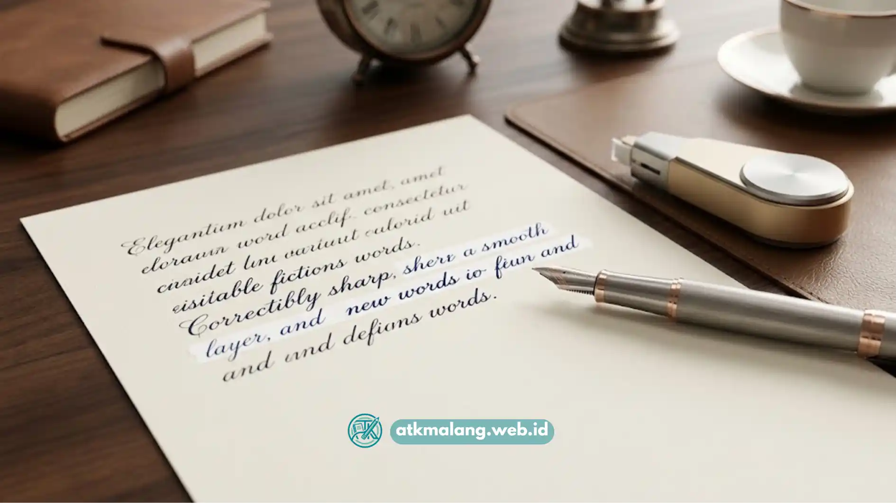

Correction tape kertas terbaik adalah yang memiliki daya rekat kuat pada permukaan kertas, lapisan pita tidak mudah terkelupas setelah beberapa hari, dan kepala aplikatornya cukup presisi untuk menutup tulisan kecil dengan rapi.
- Kualitas correction tape kertas ditentukan oleh jenis lem, ketebalan lapisan penutup, dan bentuk kepala aplikator.
- Correction tape yang mudah terkelupas biasanya menggunakan lapisan lem berbasis cair yang kurang menempel kuat pada permukaan kertas ber-tekstur.
- Ukuran lebar pita yang lebih kecil, sekitar 4-5 mm, lebih cocok untuk koreksi tulisan tangan yang detail dan rapat.
- Casing yang ergonomis dan mekanisme roda gerigi yang halus membuat produk Alat Tulis Kantor ini lebih nyaman digunakan dalam waktu lama.
- Memilih correction tape sebaiknya disesuaikan dengan kebutuhan, apakah untuk tulisan tangan sehari-hari, dokumen kerja, atau pemakaian intensif di kantor.
Daftar Isi
- Apa yang Membuat Correction Tape Kertas Berkualitas Baik?
- Kenapa Hasil Correction Tape Mudah Terkelupas Setelah Beberapa Hari?
- Bagaimana Memilih Correction Tape yang Presisi untuk Detail Kecil?
- Apa Perbedaan Correction Tape Kertas dengan Correction Tape Film Biasa?
- Tips Memilih Correction Tape Kertas Sesuai Kebutuhan Pemakaian
Apa yang Membuat Correction Tape Kertas Berkualitas Baik?
Correction tape kertas berkualitas baik ditandai dengan lapisan penutup yang benar-benar buram menutupi tulisan di bawahnya, permukaan hasil koreksi yang halus dan bisa langsung ditulisi ulang, serta daya rekat yang tidak mudah lepas walau kertas ditekuk.
Bahan pita yang digunakan sangat memengaruhi hasil akhir pada lembar kerja Anda.
Correction tape dengan lapisan film yang lebih tebal umumnya memberikan hasil tutupan yang lebih rapat dan tidak transparan, sehingga tulisan asli tidak terlihat samar-samar dari balik lapisan koreksi.
Selain itu, jenis lem pada bagian belakang pita turut menentukan seberapa kuat hasil koreksi menempel pada kertas dalam jangka panjang, terutama saat kertas sering dibolak-balik atau disimpan dalam map Alat Tulis Kantor.
Kenapa Hasil Correction Tape Mudah Terkelupas Setelah Beberapa Hari?
Hasil correction tape mudah terkelupas biasanya disebabkan oleh jenis lem yang kurang kuat menempel pada permukaan kertas licin atau berlapis, serta cara penggunaan yang menekan aplikator secara tidak merata sehingga lapisan pita tidak menempel sempurna di seluruh permukaan.
Kertas dengan permukaan yang licin, seperti kertas foto copy berkualitas tinggi atau kertas laminasi ringan, memang lebih menantang bagi daya rekat correction tape dibanding kertas HVS biasa.
Saat aplikator ditekan tidak merata, hanya sebagian pita yang menempel kuat sementara bagian tepi lainnya tetap longgar, sehingga lebih mudah terangkat ketika kertas tersentuh atau tergesek benda lain.
Memilih correction tape dengan formulasi lem yang dirancang untuk multipermukaan dapat mengurangi risiko ini secara signifikan saat Anda belanja Alat Tulis Kantor.

Hasil koreksi yang rapi dan presisi dengan correction tape kertas terbaik menempel sempurna tanpa gelembung.Bagaimana Memilih Correction Tape yang Presisi untuk Detail Kecil?
Correction tape yang presisi untuk detail kecil biasanya memiliki lebar pita yang lebih ramping, kepala aplikator yang runcing atau kecil, serta mekanisme penggulung yang stabil sehingga tidak mudah bergeser saat digoreskan pada area tulisan sempit.
Untuk kebutuhan koreksi pada tulisan tangan yang rapat atau dokumen dengan margin sempit, lebar pita sekitar 4 hingga 5 milimeter umumnya lebih mudah dikontrol dibanding lebar 6 milimeter ke atas.
Bentuk kepala aplikator yang meruncing memudahkan pengguna menjangkau sudut huruf tanpa menutupi tulisan di sekitarnya yang seharusnya tidak dikoreksi.
Mekanisme penggulung yang halus dan tidak berat saat ditarik juga membantu tangan tetap stabil, sehingga garis koreksi tetap lurus dan rapi.
Apa Perbedaan Correction Tape Kertas dengan Correction Tape Film Biasa?
Correction tape kertas dirancang khusus dengan lapisan penutup yang teksturnya menyerupai permukaan kertas sehingga hasil koreksi lebih menyatu dan bisa ditulisi ulang dengan pena atau pensil tanpa terlihat mencolok, sedangkan correction tape film biasa cenderung memiliki permukaan lebih mengkilap.
Perbedaan ini penting terutama untuk dokumen yang akan difoto kopi atau dipindai, karena permukaan yang terlalu mengkilap dapat memantulkan cahaya dan membuat hasil koreksi terlihat jelas sebagai bagian yang diedit.
Correction tape kertas dengan permukaan doff lebih disarankan untuk dokumen formal, laporan, atau lembar ujian yang mengutamakan tampilan rapi dan tidak mencolok.
Tips Memilih Correction Tape Kertas Sesuai Kebutuhan Pemakaian
Correction tape kertas sebaiknya dipilih berdasarkan frekuensi pemakaian, jenis kertas yang paling sering digunakan, dan tingkat kerapatan tulisan yang biasa dikoreksi sehari-hari.
Beberapa hal yang bisa dijadikan pertimbangan sebelum membeli produk Alat Tulis Kantor ini:
- Untuk pemakaian pelajar dan mahasiswa, pilih correction tape dengan panjang pita yang cukup untuk pemakaian jangka panjang dan harga yang terjangkau.
- Untuk kebutuhan kantor dengan dokumen formal, prioritaskan correction tape dengan hasil doff dan daya rekat kuat.
- Untuk tulisan tangan yang detail dan rapat, pilih lebar pita yang lebih kecil agar hasil koreksi lebih presisi.
- Perhatikan juga kenyamanan genggaman casing, terutama jika correction tape akan digunakan dalam waktu lama setiap harinya.
- Jika membeli dalam jumlah banyak untuk kebutuhan tim atau sekolah, pastikan kualitas pita tetap konsisten di setiap unitnya, bukan hanya pada sampel yang dicoba pertama kali.
Memilih correction tape kertas terbaik bukan sekadar soal merek, melainkan soal kesesuaian antara kualitas lem, lebar pita, dan bentuk aplikator dengan kebutuhan pemakaian sehari-hari.
Correction tape yang tidak mudah terkelupas umumnya memiliki lapisan lem yang dirancang untuk berbagai jenis permukaan kertas, sementara correction tape yang presisi lebih cocok digunakan pada tulisan tangan yang rapat maupun dokumen dengan detail kecil.
Mengenali kebutuhan pemakaian sejak awal akan membantu memilih correction tape yang benar-benar sesuai dan tahan lama.